Day 1 — The Journey to Los Angeles
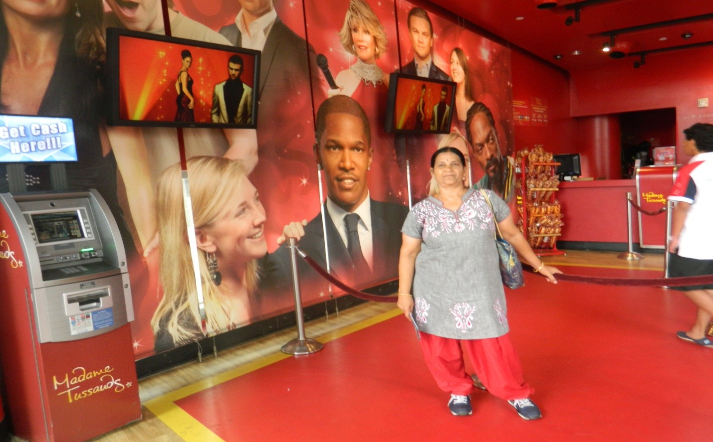
The boarding point was Cupertino, being the nearest. Uma drove us there and we arrived around 8:45 am. Waiting at the stop were another couple, Mr. Sarkar and Mrs. Gowri, who had come from Kolkata to visit family and explore the area. From that moment we were together for the entire tour. The bus arrived around 9:00 am, Uma said goodbye, and we were off.
Our first destination was Los Angeles, around 350 miles away. The bus cruised at about 70 miles per hour, stopping at restrooms every two hours in addition to lunch breaks. We never travelled at night during this tour, and the bus and guide changed a few times along the way. The guides were Chinese, and so was most of the group — we four were the only exceptions. For much of the journey the guides spoke in Chinese, which sounded to me like a continuous recitation of Sama Veda mantras at a ritual.
The route was rewarding. On both sides of the road lay fertile farmland — tomatoes, grapes, cabbage, cherry, apricot, and almond orchards. We were told California is the largest almond-producing state in the country.
Around 4:00 pm we reached Hollywood. The bus stopped for an hour. We walked along the famous street, saw the Dolby Theatre, and then moved to the Music Center, another well-known landmark. Around 7:00 pm we stopped for a 45-minute dinner break, but since Uma had packed plenty of food we had no need of a restaurant. By 8:00 pm we were checked into the Holiday Inn, La Mirada. The room was spacious and comfortable, and after our packed dinner, we turned in for the night.
Day 2 — Universal Studios Hollywood
The Studio Tour
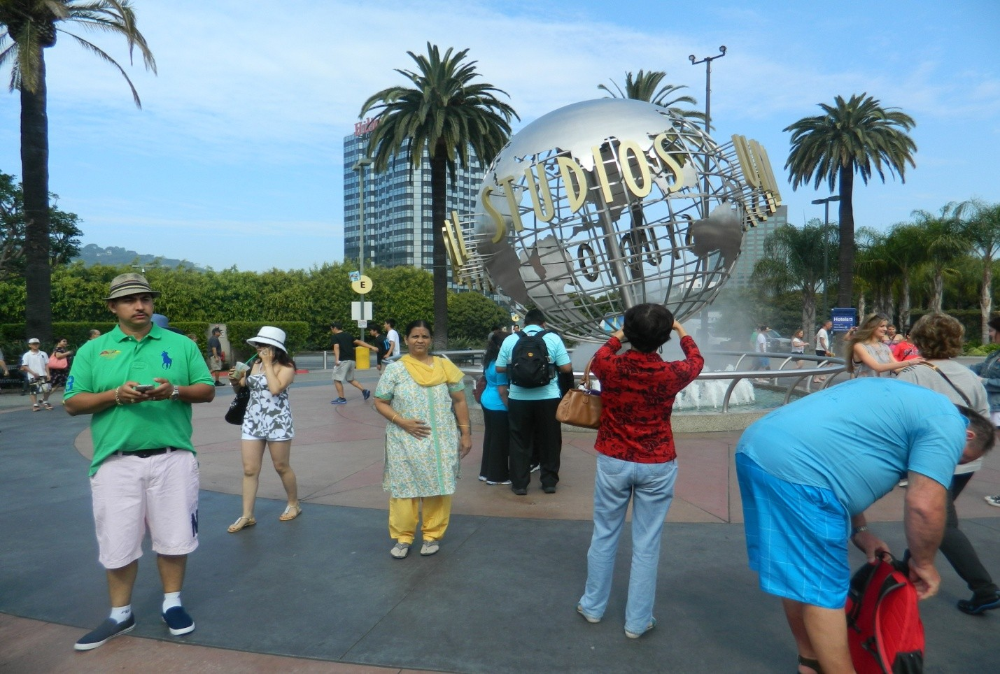
We left the hotel around 8:30 am. Universal Studios was only about 20 miles away but heavy traffic meant we arrived at 9:30 am. Upon entering we joined the queue for the famous studio bus tour, and each of us was handed 3D spectacles for the experience ahead.
The tour was extraordinary — about two hours long. The bus wound through elaborate sets: a London street, a New York City block, an airplane crash site, hotel interiors, and residential neighbourhoods. It also passed through several tunnels, each triggering an immersive 3D cinema experience — rainforests with wild animals leaping overhead, soaring mountain passes, artificial rain and floods. We were thrilled and, at moments, genuinely frightened. It was one of the most impressive attractions I have ever experienced.
After the bus tour we were free to explore until 6:00 pm. Finding vegetarian food proved difficult — we eventually managed plain rice and finger chips. It was the first time in my life I had to eat plain rice with nothing — no dal, no curd, nothing.
Water World
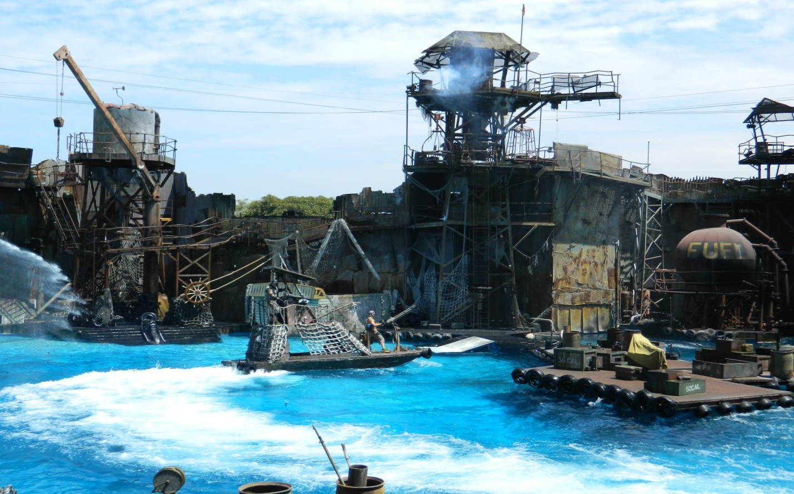
A 20-minute live action show featuring pirates in a fierce battle. Real stunt sequences — shooting, fire, jumping from boat houses into water, high-speed chases — culminating in a fireworks finale. Spectacular.
The Blues Brothers
Tired after hours of walking, we sat down in what appeared to be an open-air seating area. We only realised it was a concert venue once it had filled up around us. The Blues Brothers performed for about 30 minutes — three men and a woman. The songs were entirely unfamiliar to us, but the energy was infectious and we enjoyed every minute.
Shrek 4-D
A long queue, special spectacles, and a genuinely thrilling 4D experience. A new kind of entertainment altogether.
Horror Maze
We walked through an artificial thick forest and graveyard, mostly in darkness, with costumed performers jumping out to terrify us at every turn. Mrs. Gowri was frightened most of the time and screamed loudly on several occasions, which inadvertently added to the atmosphere for the rest of us.
Special Effects Stage
A live demonstration of film stunts and tricks — fake blood with sauce, trick knives that appear to pierce the body, and volunteers from the audience drafted into scenes. It reminded us of Ramoji Film City in Hyderabad, which offers something remarkably similar. Though Universal Studios is considerably larger with more pavilions, Ramoji holds its own — and as Indians, we ought to be proud to have something of that calibre at home.
We left Universal Studios at around 6:30 pm and returned to the hotel an hour later, passing the 75-storey tallest building in Los Angeles along the way. That evening the hotel restaurant could not offer us anything vegetarian — not even bread. We made do with biscuits and fruit for dinner.
Day 3 — San Diego
Our tour offered a choice between San Diego and Disneyland. We chose San Diego. It is about 120 miles from Los Angeles, and the drive was largely barren — the only notable sight being a large naval residential complex and, further along, a nuclear reactor that, we were told, is only activated during electricity shortages. Wind turbines were visible throughout. That day's guide was excellent — unlike the others, he spoke considerably more English than Chinese.
Naval Base San Diego
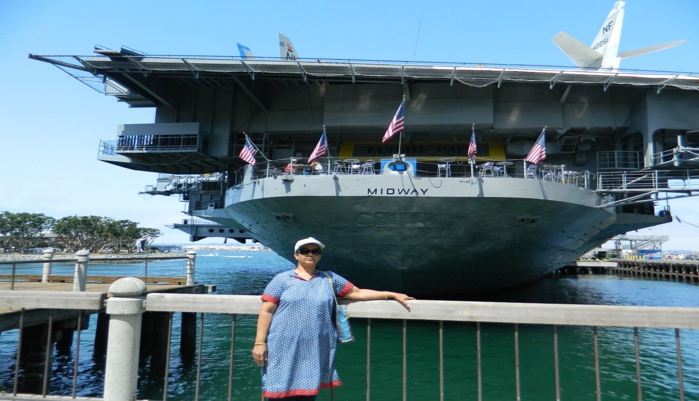
One of the largest naval bases in the United States. We were given an hour to explore the waterfront. There was a cruise option available and a large warship museum nearby, but we had insufficient time for either. We walked along the shore, took in the sight of the assembled fleet, and moved on.
Hotel Del Coronado & Beach
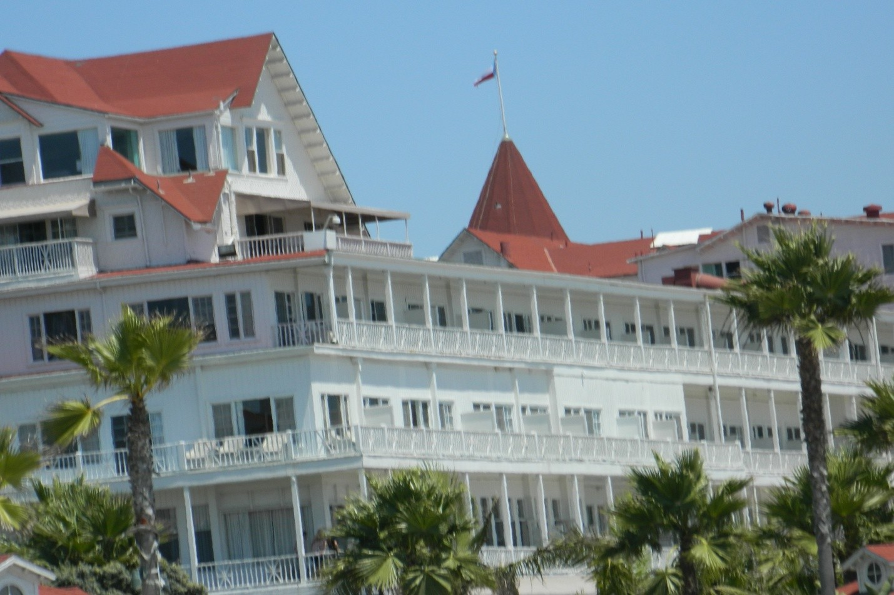
The Hotel Del Coronado is the grandest hotel in the area, sitting right on the beach. The beach was lively with sunbathers from the many hotels in the neighbourhood.
San Diego Museum
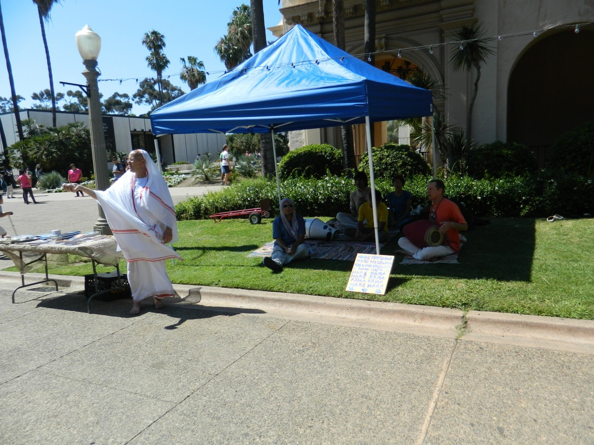
The museum itself was unremarkable, but the entrance was memorable: a woman playing a giant violin, collecting donations, and — most surprisingly — an American in a white dhoti performing Hare Krishna bhajan and collecting money. We were tired by this point and found a Starbucks for a much-needed cup of coffee and half an hour's rest.
Balboa Park
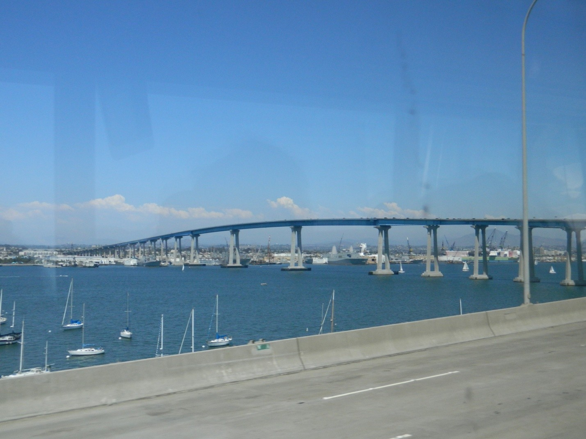
Balboa Park was the highlight of the day. It is a living history museum — a scale recreation of California as it looked some 200 years ago, complete with a post office, typical home, saloon, courthouse, jail, wine shop, and hotel, all faithfully modelled. It was fascinating to walk through. We also saw the large bridge over the bay before heading back.
Disneyland Fireworks — An Unexpected Evening
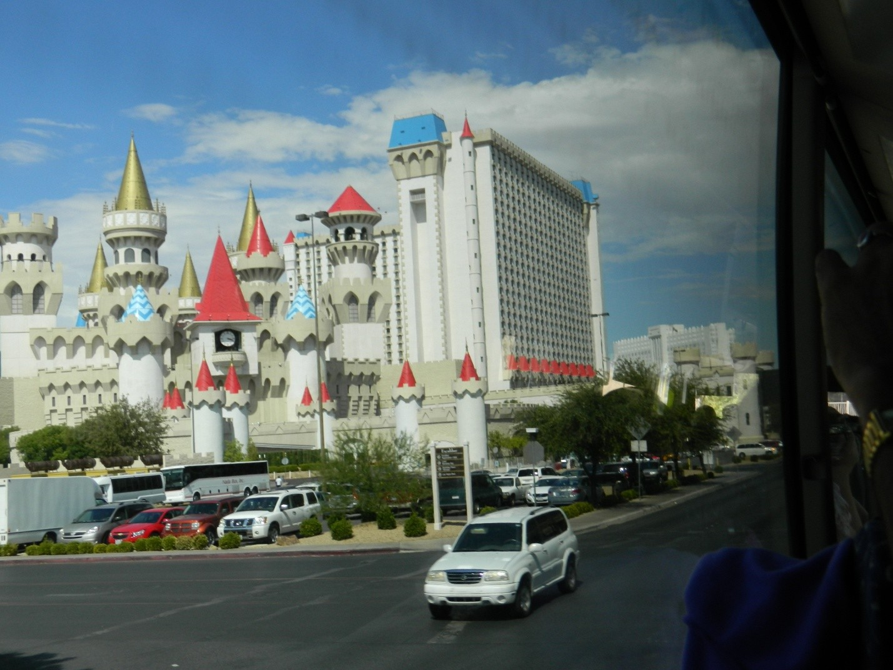
On the return journey the tour guide mentioned that there is a nightly fireworks show at Disneyland. Lakshmi persuaded him to arrange transport, and he contacted the hotel to make reservations. Back at the hotel we were asked to wait in our rooms for a call that never came. When we went down to enquire, we discovered the bus had already left without us.
If it had been only me, I would quietly have returned to the room. But Lakshmi pressed the hotel management firmly on their lapse. They acknowledged the communication failure and arranged a separate bus for us and our Bengali friends. We reached Disneyland by 9:15 pm, the show started at 9:30, and it was wonderful. We returned to the hotel by bus and retired contentedly.
Day 4 — Las Vegas
We boarded the bus at 6:45 am for the 280-mile journey from Los Angeles to Las Vegas. We had barely covered 20 miles when a Chinese girl began screaming — she had left her suitcase at the hotel. The bus halted while her friend retrieved it. About 30 minutes later, we were underway again.
The journey was demanding. We passed through the San Bernardino Mountains — high altitude ranges that must be spectacular in winter when covered with snow — and then crossed the Mojave Desert under fierce heat. Even brief stops outside the bus were unbearable. We arrived in Las Vegas around 4:00 pm.
Las Vegas is in the state of Nevada and exists entirely for entertainment. The city is full of enormous hotels and casinos, many running to hundreds of floors, each with its own theatre offering dance, comedy, glamour, and other shows that run through the night.
We were accommodated in the Excalibur Hotel — a very large property with two towers of 28 floors each. Our room was on the 12th floor of Tower I.
The Las Vegas Strip
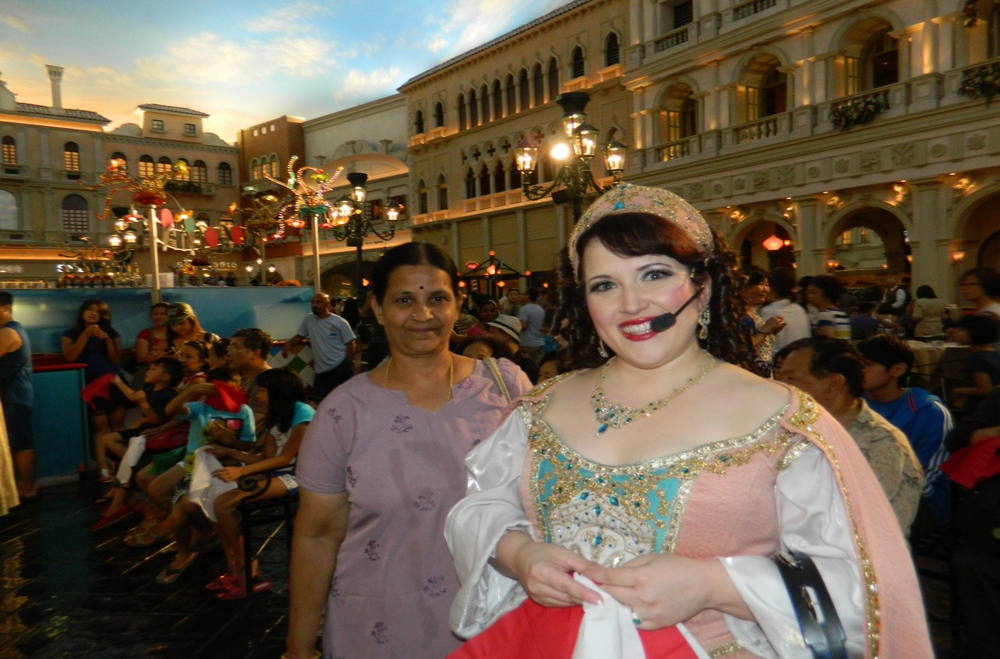
The Strip is roughly 4 miles long, a scenic route lined with the city's grandest casinos — Bellagio, MGM Grand, Caesars Palace, New York New York, Paris Las Vegas, Circus Circus, and many more. The street is alive with light decorations, enormous video screens, and a constant parade of performers: singers, instrumentalists, dancers, and entertainers in elaborate costumes. Food stalls are everywhere, though at sky-high prices
As part of the tour we had paid $25 for a night tour that began at 4:30 pm. Our guide took us through several casinos and along the busy Strip, returning us to the hotel after dinner at 11:00 pm.
The most remarkable feature of each casino is the architecture. Every one is designed differently and in ways that are difficult to convey in words. In one casino the ceiling is designed to look exactly like the open sky — so convincingly that standing beneath it, one genuinely feels as though one is outdoors under a blue sky with moon and stars. Monorail trains connect the main hotels for those who want to cover the Strip without walking.
Bellagio Musical Fountain
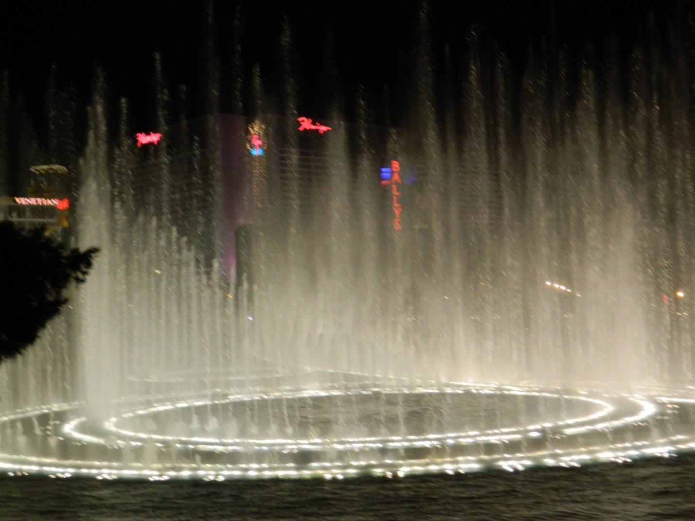
The Bellagio fountain show runs every half hour and lasts about ten minutes. We were able to stand close to the water and watch the jets rise and fall in perfect choreography with the music. It was wonderful. The Strip also featured a colourful light-and-music show overhead in one section, the roof glittering in changing colours above the crowd below.
Day 5 — Grand Canyon & Hoover Dam
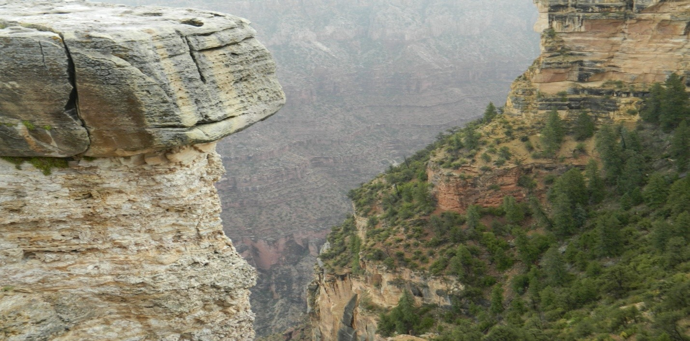
The Grand Canyon is about 300 miles from Las Vegas, in the state of Arizona. We left the hotel at 6:45 am. The Hoover Dam is on the route but the bus could not stop due to parking constraints — we caught a glimpse from the windows as we passed.
We reached the canyon around 1:00 pm and went straight to the IMAX theatre for the 3D film about the Grand Canyon. The film recounts its discovery by a Spanish explorer and brings the canyon's extraordinary scale to life. This is the largest gorge on earth: 1,600 metres deep and 446 kilometres long - so vast it is visible from outer space. The 3D experience was thrilling; at one point we felt as though we were travelling in a helicopter through the valley itself.
After the film we searched for vegetarian food and found only finger chips and a vegetable-stuffed bun — for which we paid around $20.
We then boarded the bus to reach the canyon rim, but the moment we arrived heavy rain began. We waited in the bus. The rain eased to a drizzle, but we had come too far to turn back. We walked to the edge and looked out over the deepest valley on earth. It was wonderful. The sadness was that the drizzle and cloud cover made photography difficult — I managed only a few shots.
We left the canyon around 3:00 pm and were back at the hotel by 7:00 pm. After a brief rest we went out to see a few more casinos and had vegetarian pizza and mango pulp for dinner.
Day 6 — The Return
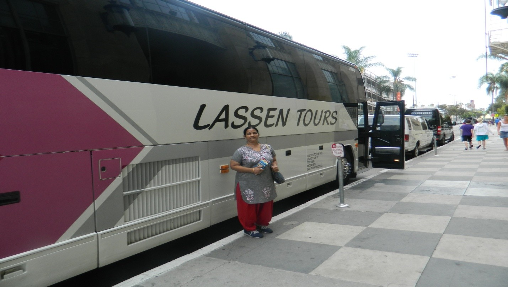
The last day of the tour. We left Las Vegas at 7:00 am for the 300-mile return to Cupertino, stopping every two hours for a 15-minute break. At lunchtime, the driver - in a kind gesture - pointed us to an Indian shop that also ran a small restaurant. We had unlimited vegetarian food: chapatti, dal, a subji, plain rice, curd, and a sweet kheer. It was delicious. Interestingly, even the Chinese bus driver chose to eat there, despite Chinese restaurants being available nearby.
We reached Cupertino around 6:00 pm. We had no mobile phone and could find no public telephone. An elderly lady noticed us and came over to ask if we needed help. We explained that we needed to contact our daughter. Without hesitation she offered us her phone. This kind of spontaneous generosity was something I witnessed repeatedly throughout our stay in America.
It reminded me of an earlier incident — when our daughter Revathy came to Mumbai, she arrived early and needed to reach me. Unable to use her iPhone, she asked someone for help, and was charged ₹10 for a one-minute local call. The contrast says something.